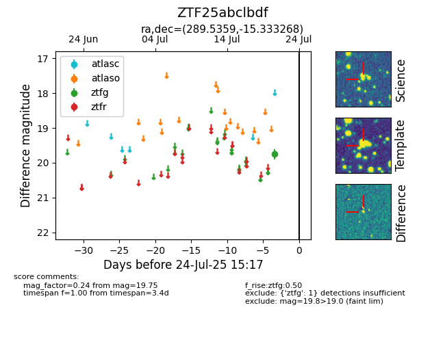

Target ZTF25abclbdf at 2025-07-24 15:17, see:
FINK: fink-portal.org/ZTF25abclbdf
Lasair: lasair-ztf.lsst.ac.uk/objects/ZTF25abclbdf
ALeRCE: alerce.online/object/ZTF25abclbdf
alt names
ZTF25abclbdf (ztf,fink)
coordinates:
equatorial (ra, dec) = (289.5359,-15.33327)
galactic (l, b) = (22.0458,-12.73055)
photometry
last ztfg=19.75
1 ztfg detections
